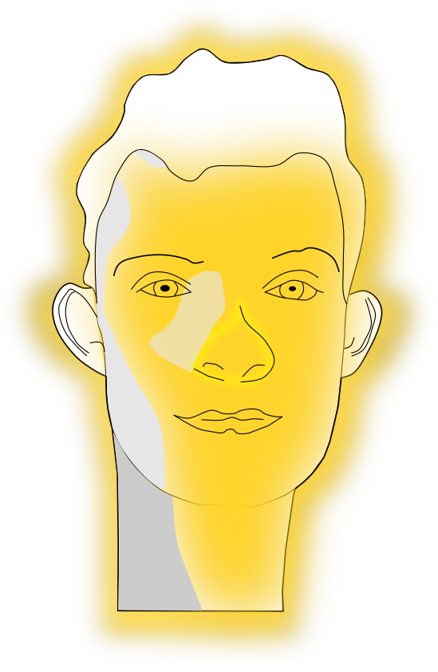
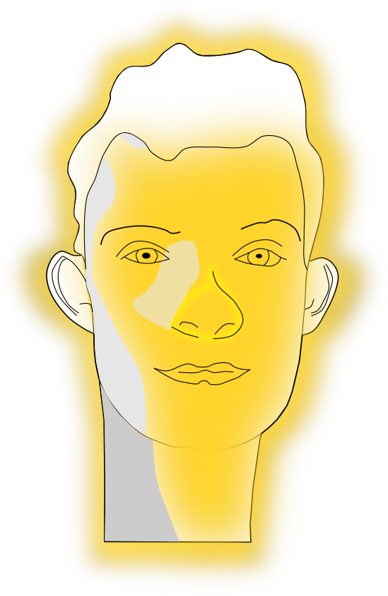
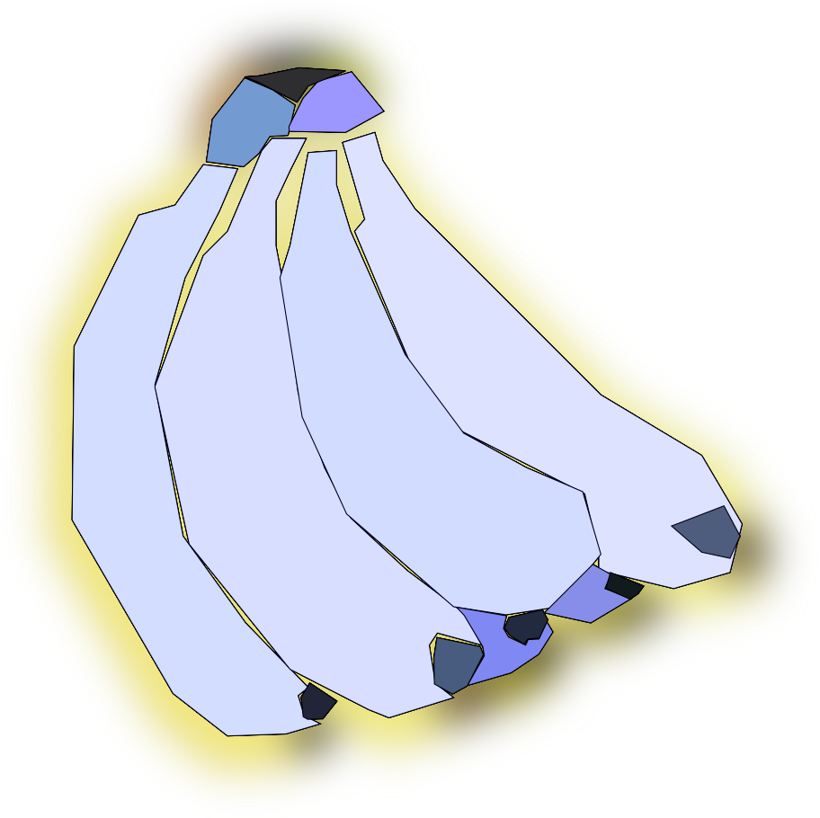

Visuality Guide
by Bryce Summers
This page shows and describes guidelines for visuality in the Graphics Diner Project.
There are 6 sections:
- perception
- geometry
- materiality
- light transport
- topology
- computer systems
Perception
Here are some references:
- Edward Tufte Books.
- Interaction of Color by Josef Albers.
- Gestalt Psychology
- Visual Design
| Topic |
Example Image |
Features |
| Signal |
|
Photorealism, as the machine captures physical photons. |
| Frequency Response |
|
- The human perceives only that light that is visible to them.
- They perceive it in a red, blue, and green spectrums based on the biology of their eyeballs.
- Color blind people perceive limited spectrums.
- Snakes perceive infrared.
While the photons may have any frequency, they are projected into how far their wavelenth's line up with the receptors of the animal perceiving them.
|
| Noise Removal |
|
The Signal is parsed into an iconic form. |
| Extant |
|
Low frequency signals are combined to determine the extant of the objects on the view plane. |
| Discretization |
|
The signal is chopped up into constituent objects.
- Contrast is used to discretize and divide extants.
-
The mind's eye can also discretize based on a particular way of seeing, for instance this sphere has been discretized based on the direction of the surface normals. A dermatologist discretized based on the features of the skin.
|
| Interaction of Color |
|
Various regions influence each other due to signal fatigue. This can lead to optical illusions. See Joseph Alber's Interaction of color. |
| Quantization |
|
We assign meanings to known objects. The meanings may also then be assigned normative names. |
| Inference |
|
- We use the known meanings to infer the unknown meanings.
- We can infer scale using familiar objects such as humans.
- We can infer depth based on our familiarity with light scattering, such as with a foggy city.
|
| Connections
|
|
We perceive groups according to Gestalt Psychology.
|
Geometry
| Topic |
Example Image |
Features |
| Surface Normals |


|
The Surface normal along the boundary can define the a space's shape. These images discretize the shape via its surface normals.
|
| Projections |
|
The Silhouettes determine the visual extent of an object. Projections from other vantage points can indicate more of the 3D form of the object. Shadows are nothing more than projections.
|
Geometry
- Shape, form, structure, without lighting.
- Shadow can provide more details about the overall structure.
Materiality
When showing materiality, it is important to show properties at the photon level and at the beam/image level. The microbehavior produces the macro behavior, but depending on the context, a computer scientist will need to think about both properties.
Materiality deals with the overall behavior of how a surface interacts with all possible spectrums of incoming light.
| Topic |
Example Image |
Features |
| Diffuse |
 |
- Diffuse reflectance is characterized by uniform hemi-spheres of light reflecting from an object.
- On the individual path scale, the bouncing is uniformly random.
On the beam scale the bean bounces as a hemi-sphere away from the point of impact.
- Yellow aura's can indicate that a surface material is emmitting photons. Suns emit, mirrors scatter.
|
| Lambertian Reflectance |

|
Lambertian Reflectance is the combination of diffuse reflection and the law of cosines. Light comes in with a directionality and is scattered uniformly randomly at every point, therebye every point is seen by the eye in proportion to the number of photons coming in. Because of the law of cosines, the proportion of photons hitting a surface point to the total energy of the beam of light is equivalent to the cosince of angle between the surface normal and the incoming beam of light.
I find that understanding this is very tricky for people.
Please see the law of cosines diagrams in the light sections.
|
| Specular |
|
- Individual photons bounce like a billiards ball. Beams of light maintain their form, which is why mirrors preserve images.
|
Materiality
- Incoming and outgoing light paths.
-
Light
How to show light, without shape?
Show properties of light + shape without materiality?
Light encompasses the way photons act, directionality, frequency. What can happen to them when they hit a surface, etc.
| Topic |
Example Image |
Features |
| Directionality |
|
Light travels in a 'straight' line in a direction. If an object has surface normals pointing away from the incoming sources of light, then they will receive less illumination.
|
| Emission |
 
 |
Emmission can be shown as an aura.
Emission is all of the places where light comes out of an object. The sun directly produces light from chemical reactions, but objects such as Bryce emit light by scattering portions of the spectrum coming in.
|
| Absorption |

|
Emmission can be shown as an aura.
Emission is all of the places where light comes out of an object. The sun directly produces light from chemical reactions, but objects such as Bryce emit light by scattering portions of the spectrum coming in.
|
| Specular |
 |
|
| Law of Cosines |
|
|
Topology
| Topic |
Example Image |
Features |
|
 |
|
Computer Systems
| Topic |
Example Image |
Features |
|
 |
|
Thank you for your interest in this information.